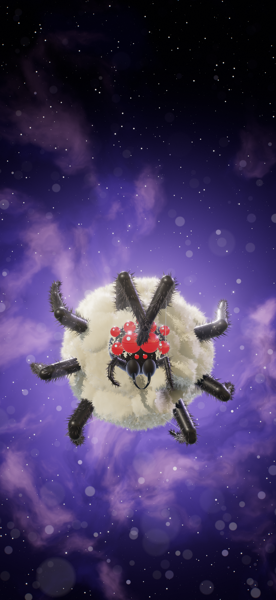

공포 행성 · 3번 솜 행성
이 행성의 규칙: 솜 위에선 절대 뛰지 마
넌 밖에서 노는 것보다 집에서 쉬는 게 더 좋은 사람이야.
강점
넌 혼자 쉬는 시간에 진짜로 충전되는 사람이라, 쉬고 나면 다시 사람들한테 다정해. 친구들도 너희 집에 오면 이상하게 편해서 오래 눌러앉아.
약점
넌 편한 게 좋아서, 가끔은 가고 싶던 자리까지 미루는 편이야. 이번 달엔 가고 싶었던 약속 하나만 네가 먼저 잡아 봐.
3번 솜 행성

열린 그림을 길게 눌러 저장하면 사진 앱에 담겨.
인스타 앱 안에서 저장이 안 되면 오른쪽 위 ⋯ → 외부 브라우저로 열기.
긴 성격 풀이는 DM의 [긴 성격 풀이 보기] 버튼에서 볼 수 있어.
이 행성을 고른 이유, 일상에서 드러나는 장면, 건넬 말 한마디까지 적어 놨어.
인스타 릴스 보러 가기넌 말하는 것보다 듣는 게 더 편한 사람이야.
강점
넌 누가 무슨 얘기를 해도 끝까지 들어 주고, 들은 걸 오래 기억해. 그래서 사람들이 너한테 속 얘기를 꺼내.
약점
넌 서운한 걸 말하는 대신 혼자 정리하고 멀어지는 편이야. 서운한 건 쌓아 두지 말고 그날 한 문장으로만 말해 봐.
넌 작은 변화도 남들보다 먼저 알아채는 사람이야.
강점
남들이 일이 터진 뒤에야 아는 걸 넌 그 전에 알아채. 그래서 친구가 힘들 때 제일 먼저 "괜찮아?" 하고 묻는 사람이 늘 너야.
약점
넌 늘 살피다 보니 아무 일 없는 날에도 혼자 지치기 쉬워. 신경 쓰이는 게 있으면 혼자 짐작하지 말고 바로 물어봐.
넌 예쁜 걸 보면 마음이 먼저 움직이는 사람이야.
강점
넌 남들이 그냥 지나치는 예쁜 순간을 찾아내. 친구 폰 사진첩에 남은 예쁜 사진은 거의 네가 찍자고 한 거야.
약점
넌 예쁜 것에 빨리 끌리는 만큼 결정도 빨리 해 버리는 편이야. 마음이 확 끌리면 그 자리에서 정하지 말고 하룻밤만 자고 다시 봐.
더 재밌게 고치려고, 이름 없이 누른 버튼·머문 시간만 세. 쓴 글·아이디는 안 보내. 자세히